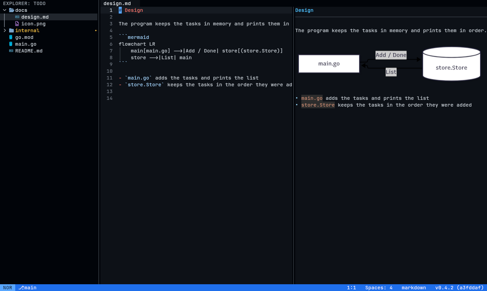
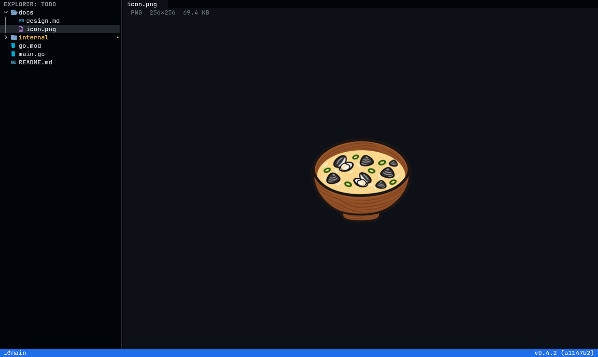

変更をファイル全体で見る
Space G（または Ctrl+G）で、エディタ全体が HEAD との差分モードに切り替わります。Space g ではプルリクエストのベースと比べます。
- 変更のあるファイルは CHANGES に並びます
- 変更のあるファイルは、ファイル全体を左右（または 1 列）の差分で開きます
- 右側は編集できます。見ながらその場で直せます
Space G（または Ctrl+G）で、エディタ全体が HEAD との差分モードに切り替わります。Space g ではプルリクエストのベースと比べます。

診断、補完、ホバー、定義へ移動、参照、リネーム、コードアクション、フォーマットに対応します。gopls、rust-analyzer、typescript-language-server などは最初から設定済みです。
languages.toml に書きます
Space m で、編集中のバッファの横に Markdown を整形して表示します。もう一度押すと、プレビューだけを表示します。

ファイルツリーや Quick Open で画像ファイルを開くと、中身のバイト列ではなく画像として表示します。

Ctrl+` でエディタの下にターミナルを開きます。エディタを離れずにテストやサーバーを動かせます。タブで複数開けます。

マルチカーソル付きの Helix 風のノーマル・挿入・選択モードか、モードの無い VS Code 風のキー。
Quick Open、コマンドパレット、プロジェクト全体の検索と置換。
git、LSP、ターミナルの状態から次の作業を提案します。選ぶと ACP でエージェントに頼みます。
変更・未追跡・追加のファイルに印が付きます。
shj ファイル はそのファイルだけを開き、:wq で終わります。$EDITOR に使えます。
画面の文言と説明書は、両方の言語で読めます。
nix run github:mm1995tk/shijimi-editor/release # すぐに動かす
nix profile install github:mm1995tk/shijimi-editor/release
go install github.com/mm1995tk/shijimi-editor/cmd/shj@latest
npm install -g shijimi-editor # Linux と macOS入れたら、プロジェクトで shj を実行します。詳しくは説明書のインストールと起動を見てください。画面の文言を日本語にするには、config.toml に ui-language = "ja" と書きます。